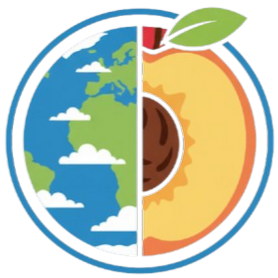
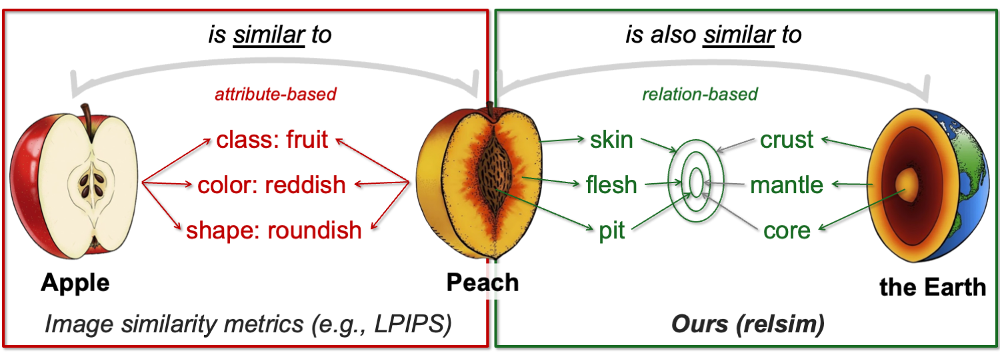
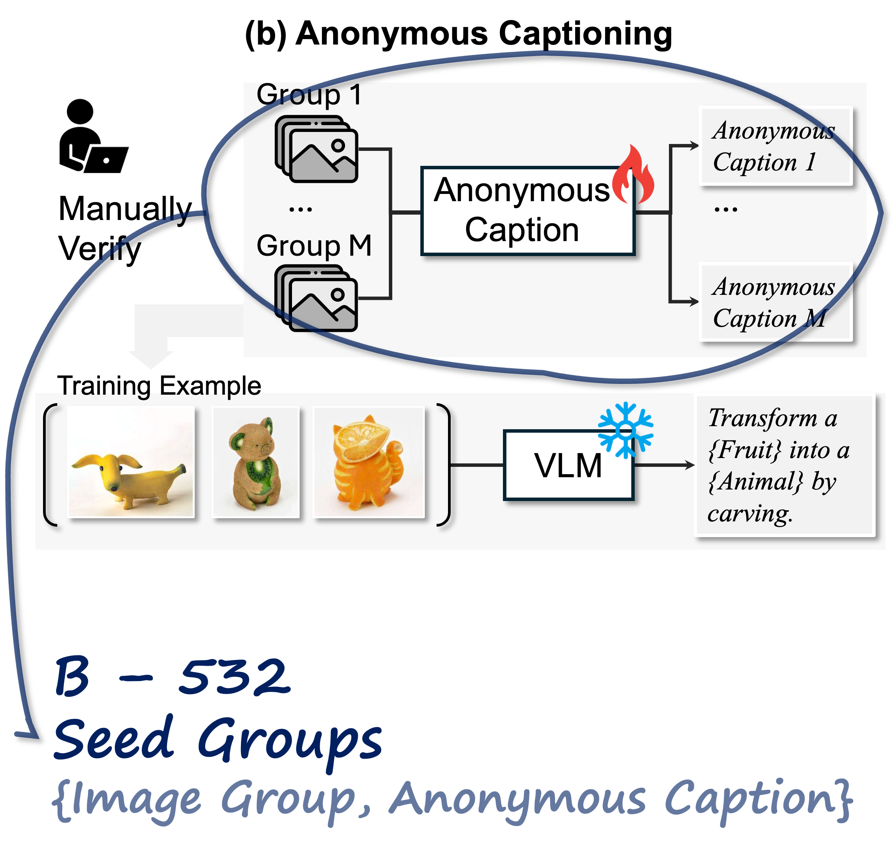

Relati

nal Visual Similarity——— arXiv 2025 ———
★: Equal advising
1.  2.
3.
2.
3.

nal Visual SimilarityTL;DR: We introduce a new visual similarity notion: relational visual similarity, which complements traditional attribute similarity.
Humans do not just see attribute similarity---we also see relational similarity.
This ability to perceive and recognize relational similarity, is arguable by cognitive scientist to be what distinguishes humans from other species.
Yet,

An apple is like a peach because both are reddish fruit, but the Earth is also like a peach: its crust, mantle, and core correspond to the peach’s skin, flesh, and pit.
How can we go beyond the visible content of an image to capture its relational properties?
To answer this question,
We then curate 114k image-caption dataset in which the captions are anonymized---describing the underlying relational logic of the scene rather than its surface content. Using this dataset, we finetune a Vision Language Model to measure the relational similarity between images. This model serves as the first step toward connecting images by their underlying relational structure rather than their visible appearance. Our study shows that while relational similarity has a lot of real-world applications, existing image similarity models fail to capture it---revealing a critical gap in visual computing.
pip install relsimfrom relsim.relsim_score import relsim
from PIL import Image
model, preprocess = relsim(
pretrained=True,
checkpoint_dir="thaoshibe/relsim-qwenvl25-lora"
)
img1 = preprocess(Image.open("image_path_1"))
img2 = preprocess(Image.open("image_path_2"))
similarity = model(img1, img2)
print(f"relsim score: {similarity:.3f}")
This is a data viewer for the datasets used in the paper. Please click on the image to view the corresponding dataset. You can also see the dataset on HuggingFace.

|
Seed Groups
 |
Anonymous Captions

|
You've reached the end.
This website template is adopted from visii (NeurIPS 2023) and DreamFusion (ICLR 2023), source code can be found here and here.
Thank you!
(.❛ ᴗ ❛.).